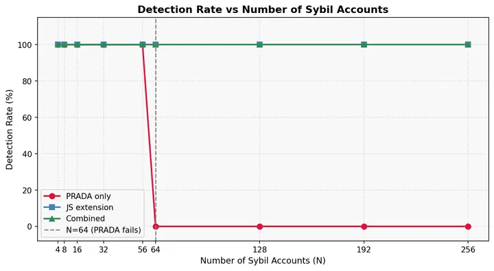

master's capstone · ML security
Sybil-Resilient Model Extraction Detection
Catching model-stealing attacks that hide across many fake (Sybil) accounts.
0 → 64Sybil accounts caught: PRADA alone vs with my detection layer
- Python
- FastAPI
- JS divergence
- MNIST